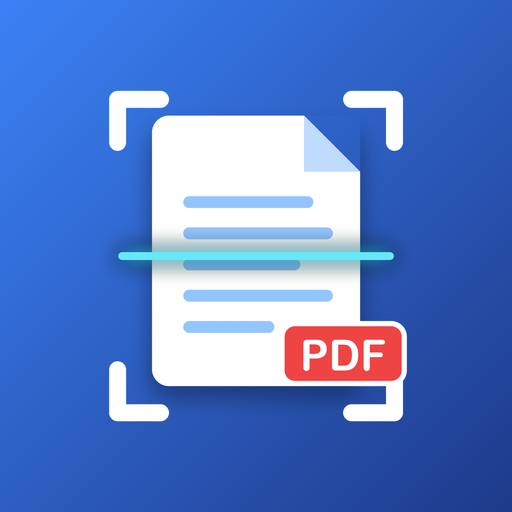

Política de privacidad
Escáner PDF
Última actualización: 24 de octubre de 2026
Esta política explica qué información maneja la aplicación para Android Escáner PDF (la “App”), desarrollada por Oscar Ramírez (RamzLabs), Guadalajara, Jalisco, México (el “Desarrollador”), y cómo se utiliza.
- Los documentos que escaneas se guardan solo en tu teléfono. El Desarrollador no los recibe ni los puede ver.
- La App no requiere crear una cuenta.
- La App muestra anuncios de Google AdMob, que recopila ciertos datos del dispositivo (como el ID de publicidad) para mostrar y medir anuncios.
1. Documentos que escaneas
La App guarda, dentro de su almacenamiento privado en tu dispositivo:
- Las imágenes de las páginas que escaneas o importas de tu galería, incluidos los cambios que hagas sobre ellas (giros, texto editado y las firmas, textos e imágenes que insertes).
- Las firmas que dibujas y decides guardar para volver a usarlas.
- El nombre que le das a cada documento y sus fechas de creación y modificación.
- El texto que la App detecta en tus documentos y las correcciones que le hagas.
- Tus preferencias de PDF (tamaño de hoja y calidad).
Esta información no se envía a servidores del Desarrollador ni a terceros y no se usa para publicidad. Los PDF que generas solo salen de la App cuando tú decides compartirlos o guardarlos en otra ubicación.
2. Escáner y reconocimiento de texto de Google
Para escanear, la App usa el escáner de documentos de Google ML Kit, que proporciona Google Play Services. La cámara la controla ese componente, por lo que la App no solicita permiso de cámara. Las imágenes se procesan en el dispositivo. La primera vez, Google Play Services puede descargar el componente del escáner. Para detectar el texto de tus documentos, la App usa el reconocimiento de texto de ML Kit, que también procesa las imágenes en el dispositivo; Google Play Services descarga su modelo. Consulta la información de ML Kit para más detalles.
3. Publicidad (Google AdMob)
La App usa Google AdMob para mostrar anuncios. El SDK de Google Mobile Ads puede recopilar y procesar automáticamente:
- El ID de publicidad de Android.
- La dirección IP y la ubicación aproximada derivada de ella.
- Información del dispositivo y del sistema (modelo, versión de Android, idioma).
- Interacciones con los anuncios y datos de diagnóstico y rendimiento.
Google usa estos datos para mostrar anuncios, medir su rendimiento, prevenir fraudes y, cuando lo permites, personalizar la publicidad. Más información:
Tus documentos escaneados no se comparten con Google ni con anunciantes.
4. Consentimiento y control de los anuncios
- Si te encuentras en el Espacio Económico Europeo, el Reino Unido o Suiza, la App te pedirá tu consentimiento antes de usar tus datos para anuncios personalizados. Puedes cambiar tu elección en cualquier momento desde Inicio → menú (⋮) → Privacidad de anuncios.
- En cualquier país puedes restablecer o eliminar tu ID de publicidad, o desactivar la personalización de anuncios, en Ajustes de Android → Google → Anuncios (o Ajustes → Seguridad y privacidad → Otros ajustes de privacidad → Anuncios).
5. Permisos de la App
- Internet y estado de la red: para cargar anuncios.
- ID de publicidad: lo usa AdMob según lo descrito arriba.
La App no pide permisos de cámara ni de almacenamiento. Al tocar “Guardar PDF” se abre el selector de archivos de Android y tú eliges dónde guardarlo; al tocar “Compartir” se abre el menú para compartir de Android y tú eliges la aplicación de destino. Para insertar una imagen en una página se abre el selector de fotos de Android y la App solo recibe la foto que eliges.
6. Conservación y eliminación de datos
Los datos que capturas permanecen en tu dispositivo hasta que los eliminas desde la App (documentos o páginas) o hasta que desinstalas la App o borras sus datos desde los ajustes de Android. Como el Desarrollador no guarda copias, no puede recuperarlos si se pierden. Para los datos que trata Google, consulta la política de Google.
7. Seguridad
La información se guarda en el almacenamiento privado de la App, al que otras aplicaciones no pueden acceder. Te recomendamos proteger tu teléfono con bloqueo de pantalla.
8. Menores de edad
La App es una herramienta de productividad dirigida a público general y no está diseñada para menores de 13 años. No recopilamos de forma intencional información de menores.
9. Cambios a esta política
Podemos actualizar esta política. Publicaremos la versión vigente en esta misma página con su fecha de actualización.
10. Contacto
Si tienes preguntas sobre esta política o sobre tus datos, escribe a oscarivanramirezruiz96@gmail.com.